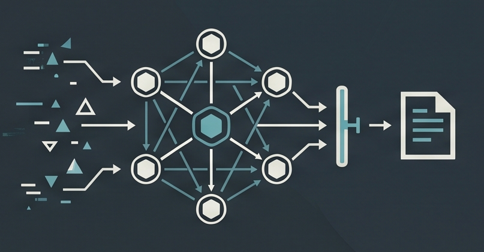
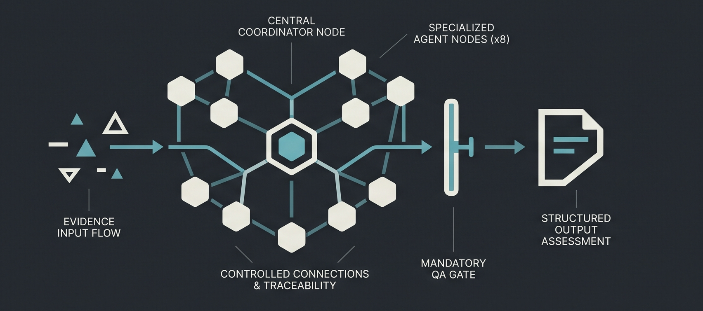

Evidence before narrative
Claims start from traceable artifacts. Scanner output and recon remain inputs—not findings by default.
Open-source security orchestration
MiniCISO coordinates specialized security agents for threat modeling, architecture, code review, AppSec, compliance, offensive validation, recon, and quality assurance—while keeping evidence, uncertainty, and human accountability visible.
Built for human-authorized, evidence-driven security work. Not a replacement for accountable professional judgment.

Project overview
This short overview introduces the project, its specialized security staff, and the operating discipline behind every assessment.
01 / Why MiniCISO
Assessments break down when evidence is scattered, tools are disconnected, and early signals become premature conclusions. MiniCISO makes the operating discipline explicit.
Claims start from traceable artifacts. Scanner output and recon remain inputs—not findings by default.
The Chief of Staff delegates to focused SMEs whose scopes and boundaries are public.
Conclusions pass through adversarial checks and mandatory Security QA before delivery.
Assumptions, confidence, residual risk, and missing evidence remain part of the record.
Authorization and consequential judgment stay with accountable security professionals.
02 / How it works
The Chief of Staff scopes the work, selects the right specialists, correlates their analysis, and enforces QA before synthesis.

03 / Meet the security staff
Each profile has a public mission, defined scope, mandatory assumptions, confidence, and residual-risk reporting.
Scopes engagements, delegates work, correlates evidence, and owns the final synthesis.
Who should investigate? What is ready to deliver?Maps assets, trust boundaries, threats, and mitigations.
What can go wrong? Where are the critical paths?Reviews system design, boundaries, controls, and resilience.
Do controls fit the design? Where does trust accumulate?Inspects implementation evidence for security-relevant defects.
Is the weakness reachable? What code proves the claim?Examines application risk across design, code, and deployment context.
What is exploitable? What evidence is still needed?Maps technical evidence to relevant control requirements.
Which controls apply? What supports compliance?Performs explicitly authorized validation within defined boundaries.
Can the path be validated safely? Is impact demonstrated?Prioritizes exposed surfaces without turning discovery into findings.
What is exposed? What deserves controlled validation?Challenges evidence, impact, confidence, and reporting quality.
Is the conclusion supported? What would invalidate it?04 / The first assessment
A good first request names the target, boundaries, known constraints, available artifacts, and desired output. MiniCISO may pause to ask for what is missing.
A supported claim with sufficient evidence.
A useful condition without full impact closure.
A candidate path still needing validation.
The exact gap blocking a stronger conclusion.
05 / Evidence-driven by design
MiniCISO preserves the difference between what is known, what is inferred, and what still needs research.
06 / Architecture overview
MiniCISO is a public overlay installed on a pinned Hermes Agent runtime. It is not a Hermes fork. Profiles, policies, templates, and shared workspace coordination remain reproducible without publishing credentials or private runtime state.
07 / Open source & reproducible
The repository packages profiles, prompts, templates, operating policies, bootstrap and validation scripts, public documentation, and sanitized configuration.
08 / Documentation gateway
Understand the operating model.
02Prepare evidence and scope.
03Explore roles and boundaries.
04See trust and coordination.
05Bootstrap the pinned runtime.
06Choose an engagement pattern.
07Protect sensitive runtime state.
08Resolve common issues.
About the project
MiniCISO is an independent open-source security engineering project created by Irlan Cidade. It explores how specialized agents, explicit operating policies, evidence management, and human oversight can support more structured security assessments.